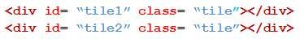

|
HOTSPOT
You have a page that contains the following HTML5 markup.

You need to set up the background of all the tile div elements as shown in the following exhibit.
How should you set the CSS style for the div elements? To answer, select the appropriate options in
the answer area.
NOTE: Each correct selection is worth one point.
Hot Area:
Correct Answer:
Section: Volume D
Explanation
Explanation/Reference:
Explicación
Tomando todas las respuestas de la primera caja:
- 1. #tile - no puede ser ya que el simbolo "#" se usa para id
- 2. .tile - esta es la opción correcta ya que todas las div tienen esta clase
- 3. body #tile - no puede ser ya que nuevamente se usa "#" que es para id
- 4. tile - esto no puede ser ya que no es un elemento del DOM.
Tomando todas las respuestas de la primera caja:
- 1. border - esta propiedad solo define por si sola la propiedad del borde del elemento
- 2. border-radius - esta es la opción correcta ya los div tienen las esquinas redondeadas las cuales se definen
por esta propiedad.
- 3. border-style - está propiedad define el estilo y no ya sea dotted, dashed y otras más que se refieren a la líneas
del border que no se aplica a lo pedido en el ejercicio
Respuesta: .tile y border-radius
<style>
.tile{
border-radius:100px/50px;
background:#a8dee7;
padding: 20px;
width: 200px;
height:150px;
}
</style>
Representación gráfica de la respuesta:
Fuentes:
Para mostrar las propiedad del border-radius: https://www.w3schools.com/cssref/css3_pr_border-radius.asp
|